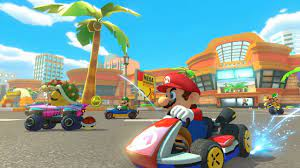
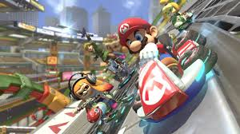
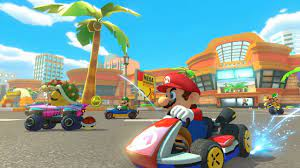
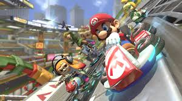

Nuestro analisis:
El mario Kart de la década
Es un excelente juego.
Lleno de contenido, un gran número de pistas de carrera, vehículos y personajes.
Tiene varias dificultades y modos de juegos que son muy divertidos.
Tu eliges como jugar si con los joycon de manera normal, con los controles de movimiento o con un kit de Nintendo labo (nintendo labo es compra por separado).
La mayoría de pistas de carrera son bastante bonitas y algunas somprendentes. Le otorgó un 9. Por que la fórmula general no ha cambiado mucho en comparación a otros juegos de la saga, si ha innovado bastante con los nuevos tipos de carrera (gravitasional, acuáticas etcétera) y nuevos objetos. Pero se agradecería algo más innovador, algo que nunca se haya visto. Aún así van por muy buen camino.
Es un juego que lo recomendamos bastante y envejecera muy bien.